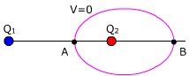

Potencial nulo En una distribución de dos cargas puntuales de signos opuestos, hay infinitos puntos donde se anula el potencial. Estos infinitos puntos deteminan una equipotencial (V = 0) que rodea a la carga de menor magnitud. Normalmente tendremos que calcular los puntos A, B donde esta equipotencial corta a la línea que une las cargas. O dicho de otra forma: buscamos los dos puntos, sobre la línea que une las cargas, donde el potencial es nulo  |